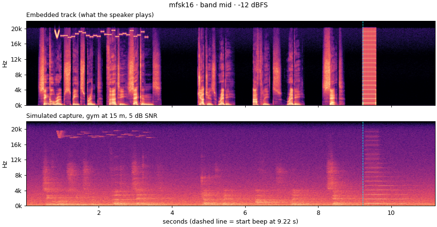
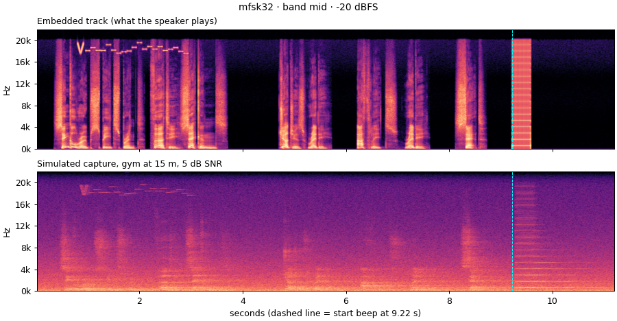
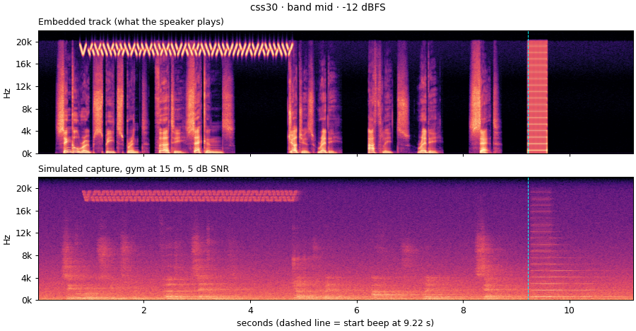
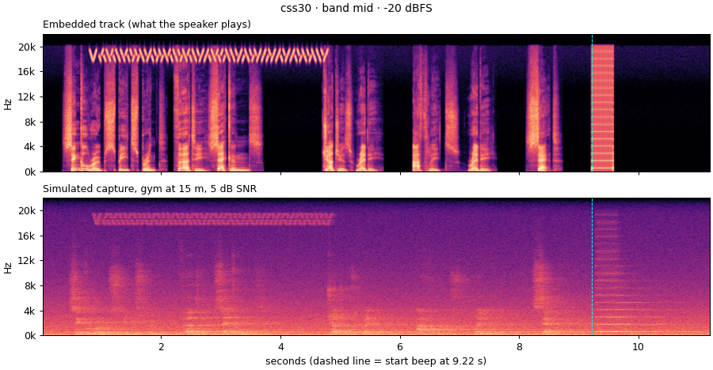
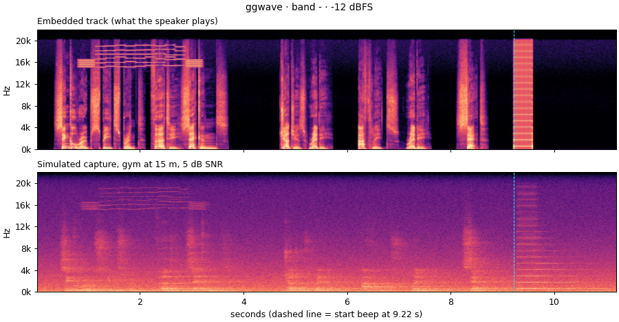

Unlisted research notes. Simulation-only proof of concept.
Goal. Give the Lens Android app a fallback signal (when the orchestrator websocket is unavailable) that says "an event of type X and duration Y is about to start, and the start beep is Z seconds away" — carried inside the IJRU timing track itself, inaudibly, and recoverable from a phone microphone in a loud, echoey gym.
Status. Simulation-only POC. Nothing here runs on a device yet. Everything under
experiments/acoustic-trigger is self-contained (own venv, no Gradle involvement).
./fetch_tracks.sh # downloads the 7 IJRU v1.0.0 tracks + decodes to WAV
uv venv .venv && uv pip install -p .venv/bin/python -r requirements.txt
.venv/bin/python run_experiments.py --quick # ~1 min smoke grid
.venv/bin/python test_payload.py # round-trip every lookup code in the spec
.venv/bin/python run_experiments.py # full grid (~20 min), writes out/results.csv
.venv/bin/python false_positives.py # receivers over unmodified tracks + noise (~20 min)
.venv/bin/python make_examples.py # listening examples -> out/examples/
The IJRU SRSS timing track with the trigger burst for
e.ijru.sp.sr.srss.1.30 embedded in its announcement, for each scheme at two
levels. The embedded track is what the speaker would play. The as heard version
simulates a phone 15 m from the speaker in a gym (RT60 ≈ 1 s, crowd noise at 5 dB SNR) and runs
until 2 s after the start beep. The −12 dBFS examples are deliberately loud; −20 dBFS is the
recommended level. Audio is lossless FLAC, so the 16–20 kHz band is intact. Use headphones and
don't turn the volume up too far: the bursts sit near the top of the audible range.
In the spectrograms the burst is the chirp preamble followed by stepped tones above 15 kHz, early in the announcement; the dashed line marks the start beep. Click a spectrogram to enlarge it.
| -12 dBFS | -20 dBFS | |
|---|---|---|
| mfsk16 band mid |
Embedded track
As heard, gym 15 m
 |
Embedded track
As heard, gym 15 m
|
| mfsk16f band mid |
Embedded track
As heard, gym 15 m
|
Embedded track
As heard, gym 15 m
|
| mfsk32 band mid |
Embedded track
As heard, gym 15 m
|
Embedded track
As heard, gym 15 m
 |
| mfsk16 band low |
Embedded track
As heard, gym 15 m
|
Embedded track
As heard, gym 15 m
|
| css30 band mid |
Embedded track
As heard, gym 15 m
 |
Embedded track
As heard, gym 15 m
 |
| ggwave band - |
Embedded track
As heard, gym 15 m
 |
Embedded track
As heard, gym 15 m
|
Downloaded from the IJRU timing tracks page (v1.0.0, Oct 2019). Spec: Signals, sounds and call-outs.
| Track | Length | Start beep at | Lookup code carried | Notes |
|---|---|---|---|---|
| SRSS | 39.9 s | 9.22 s | e.ijru.sp.sr.srss.1.30 |
stop beep at 39.22 |
| SRSE | 191.0 s | 10.28 s | e.ijru.sp.sr.srse.1.180 |
|
| SRTU | 38.8 s | 7.82 s | e.ijru.sp.sr.srtu.1.0 |
open-ended, no stop beep |
| SRSR | 130.7 s | 9.92 s | e.ijru.sp.sr.srsr.4.4x30 |
switch beeps at 493.9 Hz |
| SRDR | 70.9 s | 10.14 s | e.ijru.sp.sr.srdr.2.2x30 |
|
| DDSR | 130.8 s | 10.12 s | e.ijru.sp.dd.ddsr.4.4x30 |
|
| DDSS | 70.6 s | 9.84 s | e.ijru.sp.dd.ddss.3.60 |
Facts that shape the design:
embed.find_start_beep):
it locates the beep to within one 20 ms frame on clean tracks and on simulated
25 m / 0 dB SNR gym captures. The data burst therefore only needs to say "beep is coming in
~N s"; the beep itself gives the precise t=0.| Option | What it is | Verdict for us |
|---|---|---|
| ggwave (MIT) | Multi-frequency FSK "data over sound", audible and ultrasound (15–19.5 kHz) profiles, Reed-Solomon ECC, 8–16 B/s. Has Android/Kotlin, iOS, Python, JS bindings. Used by the Waver app. | Strong off-the-shelf baseline. Decodes in our gym sims. Cons: fixed protocol, 15 kHz base is clearly audible to kids, python API gives no sample-accurate timing, the [U] protocols are ~1.8 s for 5 bytes. |
| Quiet Modem (BSD) | liquid-SDR based OFDM/FSK modem with ultrasonic (>16 kHz) profiles; C/JS/Android/iOS. | Similar to ggwave but heavier deps and less maintained; OFDM is worse in reverberation than FSK/chirp. Not pursued. |
| Chirp.io (commercial, now Sonos) | M-ary FSK near-ultrasonic with guard intervals and amplitude envelopes to survive reverb. | Their published design notes (FSK beats PSK/OFDM in multipath; guard intervals matter) directly informed our MFSK scheme. |
| Chirp spread spectrum (LoRa-style, acoustic literature) | Each bit is an up- or down-sweep; matched-filter "pulse compression" separates direct path from echoes by arrival time. Used for indoor acoustic positioning on phones. | Best fit for a reverberant gym. Implemented here as css. Trivial to port to Kotlin (two FFT correlations). |
| Audio watermarks: audiowmark (GPL, patchwork), WavMark, AudioSeal, SilentCipher (DL-based) | Hide bits inside the audible speech, robust to MP3 etc. | Designed for file-level provenance, not for speaker→air→mic at 15 m with crowd noise; the DL ones need a PyTorch model on the phone and give no timing. Academic "re-recording robust" schemes report ~90 % accuracy at ≤1.5 m. Not pursued for the POC; possible fallback if near-ultrasonic proves unusable on some PA. |
| Room simulation: pyroomacoustics | Image-source + ray tracing RIRs. | Used for the channel model (§4). |
Physics notes that matter (from the research): * Phone mics/ADCs at 44.1/48 kHz capture up to ~20–22 kHz; many roll off above ~19–20 kHz (frequency response of smartphones at the upper audible limit). * Air absorption is ~0.5 dB/m at 19 kHz (ISO 9613-1) vs ~0.005 dB/m at 1 kHz. This shortens reverberation dramatically in the band we use (sim: RT60 ≈ 1 s at 18–20 kHz vs several s at 1 kHz), which is a big help — but it also means a 25 m path loses ~12 dB more than at 1 kHz. * Bluetooth SBC/AAC and low-bitrate MP3 re-encodes low-pass at 16–20 kHz depending on bitrate. Gym PA horns are typically rated to 20 kHz but with roll-off. This is the main real-world risk to a near-ultrasonic scheme and is modelled in the channel grid. * Adults generally can't hear >17 kHz; teenage athletes may hear up to ~19–20 kHz at high level. We therefore test three bands and report the lowest level that still decodes.
A. ggwave ultrasound profile as-is. Cheapest to ship (Kotlin binding exists). Works in simulation. Payload must be encoded as a short string; no fine timing; 15–19.5 kHz.
B. Custom near-ultrasonic M-FSK (mfsk4, mfsk16, mfsk16f, mfsk32). 4/16/32 tones
in a 2 kHz band, 60–80 ms symbols + 15–20 ms guard, even/odd symbols on interleaved tone sets so echoes of the
previous symbol don't collide. Non-coherent Goertzel detection. Chirp preamble for sync.
C. Custom chirp spread spectrum (css30, css15). Bit = up/down sweep over a 1 kHz
half-band (even/odd bits use lower/upper halves), 30 ms or 15 ms per bit + guard,
V-shaped 120 ms preamble chirp. Matched-filter detection. (css15 was dropped from the
final grid after the first round showed it clearly too short.)
D. In-band watermark under the speech (not built). Fallback only if near-ultrasonic fails on real PA gear. Audible-band DSSS loses phase coherence in reverb; would need a longer, lower-rate design and extensive listening tests.
All of B/C share the same payload/FEC layer and can coexist with A (the phone can run several detectors on the same 48 kHz mic stream).
acoustic_trigger/payload.py)The payload carries a full event definition lookup code from
lyra-sports/standards
(copy: event definition lookup codes), e.g. e.ijru.sp.sr.srsr.4.4x30, encoded field
by field so any present or future code is representable without a shared table.
64 bits → Reed-Solomon RS(12,8) → 96 bits on air.
| Bits | Field |
|---|---|
| 2 | version |
| 4 | org (ijru, rsc, ddc, sau, amjrf, svgf, ajru) |
| 2 | type (sp, fs, oa) |
| 3 | discipline (sr, dd, wh, lr, ts, xd) |
| 20 | event abbreviation, 4 chars × 5 bits (a–z, 0–4, pad) |
| 4 | participants |
| 3 | splits (1 for "30", 4 for "4x30") |
| 9 | split length in seconds (0 = open-ended) |
| 8 | offset from end of burst to start-BEEP, 100 ms units |
| 1 | spare |
| 8 | CRC-8 |
test_payload.py round-trips all 66 codes currently in the spec (including 2 corrupted
bytes and a soft erasure). RS corrects any 2 bad bytes of 12; the CRC catches RS
mis-corrections. The receiver derives duration = splits × length for the model-reset
timer, and splits tells it how many switch beeps to expect in relays.
Burst lengths at 96 bits: mfsk16 2.6 s, mfsk16f 2.0 s, mfsk32 2.2 s, css30 3.9 s,
ggwave 2.2 s. The shortest announcement (SRTU, beep at 7.8 s) still leaves room for one burst
plus a repeat.
acoustic_trigger/channel.py)Playback → air → Android mic, each stage optional:
tanh, drive 3 = badly overdriven PA).gym 32×20×9 m, hall 60×40×14 m, gym_dead
(treated); image-source early reflections + ray-traced tail; plus ISO 9613-1 air
absorption above 8 kHz applied as a time-varying filter (pyroomacoustics' own table stops
at the 8 kHz octave). Source on one wall, mic 5–30 m away, off-axis, 1.5 m high.
Resulting 18–20 kHz band: RT60 ≈ 0.9–1.0 s, direct-to-reverberant ratio −3 to −9 dB.Channel grid used by run_experiments.py:
anechoic_clean, gym_5m_snr10, gym_15m_snr5, gym_25m_snr0, gym_15m_snr5_mp3-128,
gym_15m_snr5_spk-lpf18k, gym_15m_snr5_spk-lpf16k, gym_15m_snr5_mic-lpf19k_drift100,
gym_15m_snr5_clip, hall_30m_snr0, gym_dead_15m_snr-5.
Embedding levels: burst peak at −12 / −20 / −28 dBFS (speech peaks at 0 dBFS). Bands:
hi 18.5–20 kHz, mid 17.5–19.5 kHz, low 16–18 kHz.
Full grid: 7 tracks × 16 scheme/band combos × 3 levels × 11 channels = 3696 runs
(out/results.csv, ~15 min). Decode = the full lookup code recovered exactly.
Wrong decodes (passed RS + CRC but wrong payload): 1 / 3696 — css30, hi band,
−28 dBFS, 25 m / 0 dB SNR, i.e. a burst that was already unrecoverable; the soft-erasure
retry found a codeword that passed CRC-8 by chance (~1/256 per attempt). Mitigation for
production: embed the burst twice and require agreement, or a CRC-16 if the spare bit budget
is rearranged. False positives on unmodified tracks and 2 min of noise: 0 / 144 receiver
runs (false_positives.py).
level_db -28.0 -20.0 -12.0
kind band
css30 hi 0.70 0.88 1.00
low 0.82 0.92 0.91
mid 0.81 0.97 1.00
ggwave - 0.32 0.75 0.88
mfsk16 hi 0.87 1.00 1.00
low 0.95 1.00 1.00
mid 0.92 1.00 1.00
mfsk16f hi 0.83 1.00 1.00
low 0.97 1.00 1.00
mid 0.88 1.00 1.00
mfsk32 hi 0.83 1.00 1.00
low 0.96 1.00 1.00
mid 0.96 1.00 1.00
mfsk4 hi 0.73 1.00 1.00
low 0.92 1.00 1.00
mid 0.77 0.96 0.95
kind css30 ggwave mfsk16 mfsk16f mfsk32 mfsk4
channel
anechoic_clean 1.00 0.86 1.00 1.00 1.00 1.00
gym_15m_snr5 1.00 0.76 1.00 1.00 1.00 1.00
gym_15m_snr5_clip 1.00 0.90 1.00 1.00 1.00 1.00
gym_15m_snr5_mic-lpf19k_drift100 1.00 0.76 1.00 1.00 1.00 1.00
gym_15m_snr5_mp3-128 1.00 0.67 1.00 1.00 1.00 1.00
gym_15m_snr5_spk-lpf16k 0.87 0.62 0.92 0.90 0.90 0.73
gym_15m_snr5_spk-lpf18k 0.97 0.76 1.00 0.98 1.00 0.83
gym_25m_snr0 0.37 0.33 0.95 0.95 0.95 0.92
gym_5m_snr10 1.00 1.00 1.00 1.00 1.00 1.00
gym_dead_15m_snr-5 1.00 0.48 1.00 1.00 1.00 0.98
hall_30m_snr0 0.59 0.05 0.81 0.78 0.84 0.71
band - hi low mid
channel kind
gym_15m_snr5_spk-lpf16k css30 NaN 1.00 1.00 1.00
ggwave 0.86 NaN NaN NaN
mfsk16 NaN 1.00 1.00 1.00
mfsk16f NaN 1.00 1.00 1.00
mfsk32 NaN 1.00 1.00 1.00
mfsk4 NaN 1.00 1.00 0.86
gym_25m_snr0 css30 NaN 0.43 0.14 0.71
ggwave 0.29 NaN NaN NaN
mfsk16 NaN 1.00 1.00 1.00
mfsk16f NaN 1.00 1.00 1.00
mfsk32 NaN 1.00 1.00 1.00
mfsk4 NaN 1.00 1.00 1.00
hall_30m_snr0 css30 NaN 0.29 1.00 1.00
ggwave 0.00 NaN NaN NaN
mfsk16 NaN 1.00 1.00 1.00
mfsk16f NaN 1.00 1.00 1.00
mfsk32 NaN 1.00 1.00 1.00
mfsk4 NaN 1.00 1.00 1.00
The receiver predicts the start beep from burst position + payload offset, then confirms it
with the 578 Hz detector. Over 3274 decoded runs the prediction was within
±120 ms (σ ≈ 26 ms) of the detected beep for all schemes; the per-scheme mean offsets of
−22…+24 ms are constant and would be calibrated out. 6 runs had the beep detector fire
~1.7 s early on a spoken word; gating the detector to the predicted window (which the payload
gives us) removes that class of error. The beep was found in 100 % of runs on every channel.
mfsk16, mfsk16f and mfsk32
all decode 100 % at −20 and −12 dBFS in every band on every channel except the two
hardest (16 kHz speaker low-pass: 90–92 %, 60 m hall at 30 m: 78–84 % — both recover to
100 % in the mid/low bands at −20 dBFS, the failures are the hi band at −28 dBFS).
Still ≥ 83 % at −28 dBFS.mfsk16f (2.0 s burst) and mfsk32
(2.2 s) match mfsk16 (2.6 s) within noise, so there is room to repeat the burst inside
even the shortest announcement.css30 is 100 % in the 15 m cases but drops at 25 m / 0 dB. Matched
filtering does compress echoes, but 30 ms sweeps carry ~3× less energy per bit than an
80 ms tone, and in a gym with RT60 ≈ 1 s in-band that energy margin matters more than the
echo separation. It is also the longest burst (4 s at 96 bits).mid (17.5–19.5 kHz) and low (16–18 kHz) are the most robust; hi
(18.5–20 kHz) is the least audible but suffers first from the 16/18 kHz speaker
low-pass and mic roll-off. mid is the sensible default; the 16 kHz-lowpass case is the
one to test on real PA gear.Recommendation: build on scheme B (mfsk16f or mfsk32, 17.5–19.5 kHz, −20 dBFS,
burst repeated twice), keep ggwave as a cross-check, don't pursue in-band watermarking
unless real-world PA tests fail.
Why: it had the best margin on every simulated impairment, the receiver is ~60 lines of DSP (band-pass, chirp-preamble correlation, 32–64 Goertzel bins per symbol, RS(12,8) + CRC) that ports straight to Kotlin with no native deps, and it gives sample-accurate burst timing so the device can arm itself and then lock to the real beep.
Suggested next steps, in order:
UNPROCESSED source if available), then run receive() offline on the captures.
This validates the two things simulation can't: the PA's real HF roll-off and the phone's
mic/AGC/noise-suppression behaviour. If mid fails on some PA, drop to low.AudioRecord at 48 kHz mono in the same process as the camera
MediaRecorder (same-UID concurrent capture is allowed on Android 10+; needs checking
against the HLS recording path in RecorderWrapper.kt). Detector runs continuously,
emits Armed(lookupCode, duration, splits, expectedBeepAt) then Started(t0) when the 578 Hz beep is
confirmed inside the predicted window, and Stopped at t0 + duration (or on the stop
beep). Same event shape the orchestrator websocket will emit, so the AI model reset
logic doesn't care which source fired.